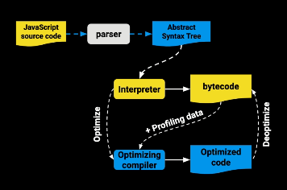
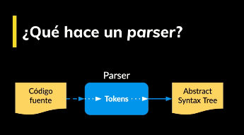
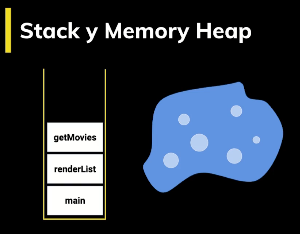
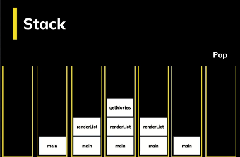
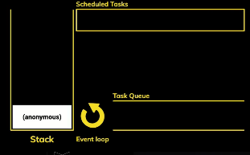

Introducción
Para iniciar un proyecto profesional en Javascript, debemos
instalar
npm, para crear un proyecto con npm, corremos el comando:
npm init -y
Se creara el archivo package.json, que sera
similar al siguiente:
{
"name": "mediaplayer",
"version": "1.0.0",
"description": "Proyecto del Curso Profesional de JavaScript de la escuela de Javascript de Platzi",
"license": "MIT",
"author": "Carlos Zabala",
"keywords": [
"platzi"
],
"scripts": {},
}
Para simular un servidor donde correrá nuestro programa se
instalara
LiveServer, el cual es un pequeño servidor de desarrollo con capacidad de
recarga en vivo. Se instala a través de npm mediante el
siguiente código.
npm install -D live-server
Se añade a devDependencies:
"devDependencies": {
"live-server": "^1.2.1"
}
Se usa a través de su script llamado start:
"scripts": {
"start": "live-server"
},
Finalmente se ejecuta usando el comando en la terminal:
npm start
Cómo llega un script al navegador
El DOM es la representación que hace el navegador de un
documento HTML. El navegador interpreta el archivo HTML y cuando termina de
transformarlo al DOM se dispara el evento
DOMContentLoaded lo que significa que todo el
documento está disponible para ser manipulado.
Todo script que carguemos en nuestra página tiene un llamado y
una ejecución. Tanto con async como
defer podemos hacer llamados asíncronos, pero
tiene sus diferencias:
-
async: Con async podemos hacer la petición de
forma asíncrona y no vamos a detener la carga del DOM hasta
que se haga la ejecución del código. Cuando se cumpla la
petición es decir cuando tengamos una respuesta si se detendrá
la carga del DOM.
-
defer: La petición es igual asíncrona como en
el async pero va a deferir la ejecución del Javascript hasta
el final de que se cargue todo el documento.
Hay que tener en cuenta que cuando carga una página y se
encuentra un script a ejecutar toda la carga se detiene. Por eso
se recomienda agregar tus scripts justo antes de cerrar el body
para que todo el documento esté disponible.
Scope
El Scope o ámbito es lo que define el tiempo de vida de una
variable, en que partes de nuestro código pueden ser usadas.
-
Global Scope: Variables disponibles de forma
global se usa la palabra var, son accesibles por todos los
scripts que se cargan en la página. Aquí hay mucho riesgo de
sobreescritura.
-
Function Scope: Variables declaradas dentro
de una función sólo visibles dentro de ella misma (incluyendo
los argumentos que se pasan a la función).
-
Block Scope
Variables definidas dentro de un bloque, por ejemplo variables
declaradas dentro un loop while o for. Se usa let y const para
declarar este tipo de variables.
-
Module Scope
Cuando se denota un script de tipo module con el atributo
type="module las variables son limitadas al archivo en el que
están declaradas.
<script type="modules" src="./assets/index.js"></script>
import nombreModulo from "./ruta/archivo.js"
export default nombreModuloExportar
Closures
Son funciones que regresan una función o un objeto con funciones
que mantienen las variables que fueron declaras fuera de su
scope. Los
closures
nos sirven para tener algo parecido a variables privadas,
característica que no tiene JavaScript por default. Es decir
encapsulan variables que no pueden ser modificadas directamente
por otros objetos, sólo por funciones pertenecientes al mismo.
IIFE
(function(){
let color = 'green'
(function printColor(){
console.log(color)
}
printColor()
})()
function makeColorPrinter(color){
let colorMessage = `The color is ${color}`
return function (){
console.log(colorMessage)
}
}
let greenColorPrinter = makeColorPrinter('green')
console.log(greenColorPrinter())
function makeCounter(n) {
let n = n;
return {
increase : function() {
count = count + 1;
},
decrease: function() {
count = count - 1;
},
getCount: function() {
return count;
}
};
}
let counter = makeCounter(7)
console.log('The count is, ' , counter.getCount)
counter. increase()
counter. decrease()
counter. decrease()
counter. decrease()
this
this se refiere a un objeto, ese objeto es el que actualmente
está ejecutando un pedazo de código. No se puede asignar un
valor a this directamente y este depende de en qué scope nos
encontramos:
-
Cuando llamamos a this en el
Global Scope o Function Scope, se hace
referencia al objeto window. A excepción de cuando estamos en
strict mode que nos regresará undefined.
-
Cuando llamamos a this desde
una función que está contenida en un objeto,
this se hace referencia a ese objeto.
-
Cuando llamamos a this desde una
"clase", se hace referencia a la instancia
generada por el constructor.
console.log("This" + this)
function whoIsThis() {
return this;
}
console.log(`whoIsThis() = ` + whoIsThis());
function whoIsThis() {
"use strict" ;
return this;
}
console.log(`whoIsThis() = ` + whoIsThis());
This en el contexto de un objeto:
const person = {
name: "Carlos" ,
saludar: function() {
console.log(`Hola soy ${this.name}`);
}
};
person.saludar();
const action = person.saludar;
action();
Depende del contexto o el ámbito en que se esté usando this.
Los métodos call, apply y bind
Estas funciones nos sirven para establecer el valor de this, es
decir cambiar el contexto que se va a usar cuando la función sea
llamada. Las funciones call, apply y bind son parte del
prototipo Function. Toda función usa este prototipo y por lo
tanto tiene estas tres funciones.
-
functionName.call(): Ejecuta la
función recibiendo como primer argumento el this y los
siguientes son los argumentos que recibe la función que llamó
a call.
-
functionName.apply(). Ejecuta la
función recibiendo como primer argumento el this y como
segundo un arreglo con los argumentos que recibe la función
que llamó a apply.
-
functionName.bind(). Recibe como
primer y único argumento el this. No ejecuta la función, sólo
regresa otra función con el nuevo this integrado.
call
function saludar() {
console.log(`Hola. Soy ${this.name} ${this.lastName}`);
}
saludar();
La función anterior, no está en el contexto de ningún objeto de
ninguna clase y aun así estamos usando this, el resultado será
undefined. Podemos establecer quien es this a esa función por
medio de call, appy, bind.
Primero se crea un objeto, que es el que tendrá la referencia a
this en esa función.
const carlos = {
name = 'Carlos' ,
lastName = 'Zabala'
}
saludar.call(carlos);
Al método call necesita que le pasemos quien es this, en este
caso el objeto Carlos. También le podemos pasar parámetros
usando call de la siguiente forma:
function caminar(metros, direccion) {
console.log(`${this.name} caminó ${metros} mts en dirección ${direccion}`);
}
caminar.call(carlos, 100, "sur");
apply
Funciona igual que call, pero la
manera en cómo se pasan los argumentos es diferente en vez de
pasar todos los argumentos separados por coma, se pasa un
arreglo de argumentos.
caminar.apply(carlos, [200, "norte"]);
const array = [800, "oeste"];
caminar.apply(carlos, array);
call -> c -> comas
apply -> a -> arreglo
bind
bind no ejecuta directamente la función lo que hace es crear una
nueva función. Para pasarle argumentos se pueden hacer
directamente cuando se llama bind o pasarselos a la nueva
función creada.
const newSaludar = saludar.bind(carlos);
newSaludar()
Prototype
En Javascript todo son objetos, no tenemos clases, no tenemos
ese plano para crear objetos. Todos los objetos "heredan" de un
prototipo que a su vez hereda de otro prototipo y así
sucesivamente creando lo que se llama la
prototype chain. La keyword
new crea un nuevo objeto que
"hereda" todas las propiedades del prototype de otro objeto. No
confundir prototype con proto que es sólo una propiedad en cada
instancia que apunta al prototipo del que hereda.
Usando new podemos pasar de esto:
function NombreClase() {
clase.methods = Object.create(NombreClase.prototype);
clase.atributo = 'Este es el atributo del prototype' ;
return clase;
}
NombreClase.prototype.NombreFuncion = function() {
console.log('Esto es una función del prototype');
}
const bumblebee = NombreClase
NombreClase.NombreFuncion()
A esto, una mejor forma de escribir código (azúcar sintáctica),
ya no hace falta especificar el
Object.create ni retornar los
atributos de la "clase".
function NombreClase() {
NombreClase.prototype.NombreFuncion() {
console.log('Esto es una función del prototype');
}
}
const object = new NombreClase()
En js no existen las clases, pero si los objetos, para simular
una clase su usan los prototipos.
Herencia Prototipal
Por default los objetos en JavaScript tienen cómo prototipo a
Object que es el punto de partida de
todos los objetos, es el prototipo padre. Object es la raíz de
todo, por lo tanto tiene un prototipo padre undefined. Cuando se
llama a una función o variable que no se encuentra en el mismo
objeto que la llamó, se busca en toda la prototype chain hasta
encontrarla o regresar undefined. La función
hasOwnProperty
sirve para verificar si una propiedad es parte del objeto o si
viene heredada desde su prototype chain.
object.hasOwnProperty('Saludar')
__proto__ Es algo que puede variar
debido a algún browser o node, Para acceder a proto lo
recomendable es mediante la función
getPrototypeOf.
Object.getPrototypeOf(object)
Parsers y el Abstract Syntax Tree
El JS Engine recibe el código fuente y lo procesa de la
siguiente manera:
-
El parser descompone y crea tokens
que integran el AST.
-
Se compila a bytecode y se
ejecuta.
-
Lo que se pueda se optimiza a
machine code y se reemplaza el
código base.
Un SyntaxError es lanzado cuando el motor JavaScript encuentra
partes que no forman parte de la sintaxis del lenguaje y esto lo
logra gracias a que se tiene un AST generado por el parser. El
parser es del 15% al 20% del proceso de ejecución por lo que hay
que usar parser del código justo en el momento que lo
necesitamos y no antes de saber si se va a usar o no.
Para que el código llegue al navegador tiene que pasar muchas
cosas, agarra el código, lo analiza, lo deconstruye, lo
construye nuevamente, lo ejecuta y lo optimiza. Este es el
proceso que realiza JavaScript para lograr ejecutar su código de
la mejor forma posible. Ahora veamos un gráfico donde se explica
mejor.

-
Bytecode: es un código de más bajo
nivel que permite que se ejecute mucho más rápido. Donde se va
a empezar a ejecutar el programa
-
Profiling data: encuentra todos
los puntos optimizables del código para luego dar paso al
optimizer compiler -> machine code
-
Optimized code: Aveces este
proceso falla y se quita la optimización.
Parser: Este agarra tu código fuente
y lo lee, pero tiene que descomponerlo primero, a estos pedazos
se les llama tokens, identifica que significa cada palabra o
símbolo. Una vez teniendo esta información se pasa al Abstract
Syntax Tree.

Cuando sucede un error en esta lectura es donde sucede el
syntaxError. Parsing debe hacerse bien
Tokens: Esto nos da el tipo y el
valor que tiene cada palabra, símbolo o número. Tendremos cada
uno de los caracteres clasificados para poder manipular y leer
cada uno de ellos.
demo
Ast: Esta es una estructura en forma
de árbol, Abstract Syntax Tree. Este empieza desde una raíz y se
desploma en partes. Se puede usar en muchos lugares, para
corregir el código, para compilar, entre otras funciones.
Podemos experimentar en el siguiente
enlace. Allí veremos cómo se va ramificando nuestro programa y va
haciéndolo en forma de patrón anidado profundo, aparece valores
que nuestro programa terminará ejecutando.
Cómo funciona el JavaScript Engine
Una vez tenemos el AST ahora hay que
convertirlo a Bytecode. Bytecode es
como el código assembler pero en lugar de operar en el
procesador opera en la máquina virtual
V8 del navegador.
Machine code es el más bajo nivel,
es código binario que va directo al procesador. El
profiler se sitúa en medio del
bytecode y el optimizador Cada máquina virtual tiene sus
particularidades, por ejemplo V8 tiene algo llamado
Hot Functions. Cuando una sentencia
función es ejecutada muy frecuentemente, V8 la denomina como una
hot function y hace una optimización que consiste en convertirla
a machine code para no tener que interpretarla de nuevo y
agilizar su ejecución.
Cada navegador tiene su implementación de JavaScript Engine:
- SpiderMonkey - Firefox.
- Chackra - Edge.
- JavaScriptCore - Safari.
- V8 - Chrome.
Event Loop
Es lo que hace que JavaScript parezca ser multi-hilo cuando en
realidad es de un solo hilo. Esto permite hacer muchas cosas a
la vez. JavaScript se organiza en dos estructuras de datos:

Javascript se organiza usando las siguientes estructuras de
datos:
-
Stack: Va apilando de forma
organizada las diferentes instrucciones que se llaman. Lleva
así un rastro de dónde está el programa, en que punto de
ejecución nos encontramos.
-
Memory Heap: De forma
desorganizada se guarda información de las variables y del
scope.
Al stack se le llena haciendo
push, se le va agregando
información se arriba hacia abajo, para para poder sacar
información que esté en la parte inferior primero tenemos que
sacar a los bloques de información que estén arriba, a esta
acción se le llama pop.

-
Memory Heap: De forma
desorganizada se guarda información de las variables y del
scope.
-
Schedule Tasks: Aquí se agregan a
la cola, las tareas programadas para su ejecución.
-
Task Queue: Aquí se agregan las
tares que ya están listas para pasar al stack y ser
ejecutadas. El stack debe estar vacío para que esto suceda.
-
MicroTask Queue: Aquí se agregan
las promesas. Esta Queue es la que tiene mayor prioridad.
El Event Loop es un loop que está ejecutando todo el tiempo y
pasa periódicamente revisando las queues y el stack moviendo
tareas entre estas dos estructuras.

Getters y setters
Los getters y setters son funciones que podemos usar en un
objeto para tener propiedades virtuales. Se usan los keywords
set y get para crear estas propiedades. Estas propiedades al ser
funciones pueden llevar una validación de por medio y ser usadas
con el operador de asignación como si fueran una variable más
dentro del objeto.
Fetch - Cómo cancelar peticiones
La peticiones AJAX permitieron en su tiempo hacer peticiones
asíncronas al servidor sin tener que detener la carga de la
página. Hoy en día se utiliza la función fetch para esto. Con
fetch tenemos algo llamado
AbortController que nos permite
enviar una señal a una petición en plena ejecución para
detenerla.
let controller = new AbortController();
const response = await fetch(url, { signal: controller.signal });
controller.abort();
IntersectionObserver
Sirve para observar elementos y si cruzan un umbral que nosotros
definimos nos lo va a notificar para tomar acción. El umbral se
define por el porcentaje que tiene intersección con el viewport,
con la parte visible de nuestra página.
ejemplo
const observer = new IntersectionObserver(this.handleIntersection, {
threshold: 0.25
});
Mediante el método observe se le
pasa el elemento HTML que se desea "escuchar".
observer.observe(player.media);
cuando intersectionObserver llame al método handler, le pasara
como parámetros todos los entries, los entries serán todos los
elementos que estamos observando en este caso es uno solo.
handleIntersection(entries) {
const entry = entries[0];
console.log(entry);
}
De las propiedades más importantes esta el
intersectionRatio que será el que
nos indique si el elemento está en pantalla o no, si se está
yendo o llegando.
VisibilityChange
El visibilityChange forma parte del API del DOM llamado Page
Visibility y nos deja saber si el elemento es visible, pude ser
usado para ejecutar una acción cuando cambiamos de pestaña. Así
podemos ahorrar batería y mejorar la UX.
documentación
document.addEventListener('visibilitychange' , handleVisibilityChange)
handleVisibilityChange() {
const isVisible = document.visibilityState === "visible";
if (isVisible) {
} else {
}
}